Emilia's Graces is a growing gluten-free granola company expanding from local farmers markets into regional retail and institutional partnerships. Our capstone team redesigned the brand's ecommerce experience, visual identity system, and Shopify architecture into a more scalable, trustworthy, and cohesive digital presence.
- 🏆 1st Place — JMU Interactive Design Capstone
- Complete brand system
- Shopify implementation
- Subscription UX concepts
Team
4-person interdisciplinary UX team
Focus
Branding · Shopify UX · Ecommerce Strategy · Packaging
Deliverables
Brand system · Packaging · Shopify redesign · Subscription UX · Social templates · Iconography
Key challenge
Balancing handmade warmth with scalable ecommerce trust
A loved product without a brand to match.
Emilia's Graces had built a loyal local following, but its website and brand system no longer reflected the company's growth into ecommerce and institutional partnerships. The experience lacked clear hierarchy, scalable product organization, and strong trust communication for gluten-free customers.
- Visual identity was inconsistent across web, packaging, and social
- Product organization didn't scale for a growing catalog
- Gluten-free trust messaging was weak despite being the core value
- Audience pathways (retail, wholesale, DTC) were unclear
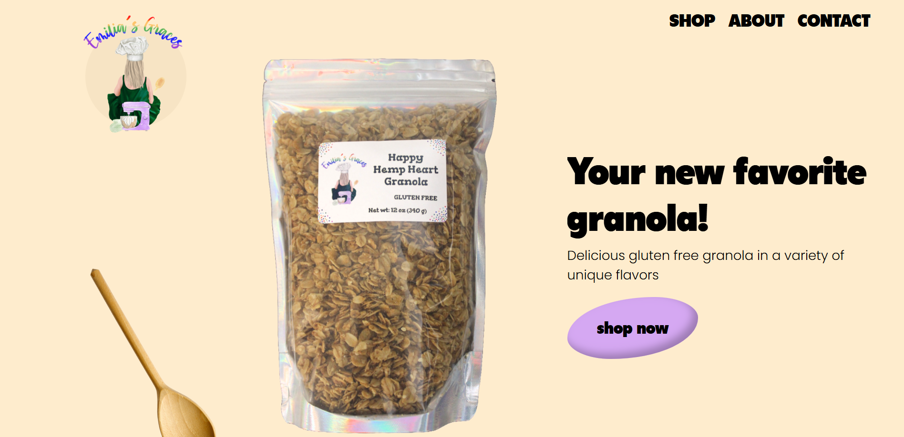
The original experience — audited.
Designing for trust, scale, and three audiences.
Emilia's Graces wasn't selling to one customer — it was selling to three, each with different needs and different reasons to trust the brand. Before any visuals, we mapped those audiences so every design decision laddered back to a real person and a real business goal.
Audience personas
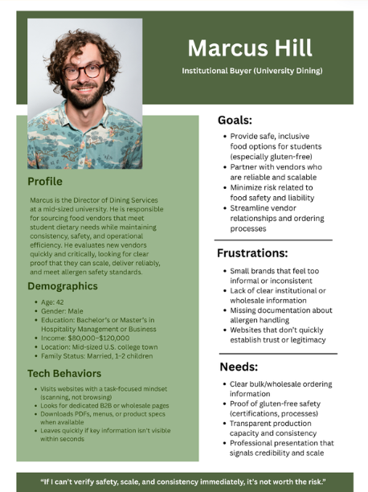
Marcus Hill — Institutional Buyer
Needs proof of consistency, supply reliability, and clear wholesale pathways before committing.
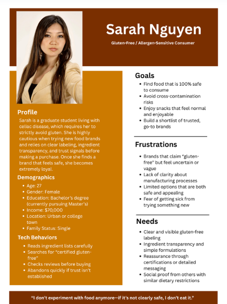
Sarah Nguyen — Allergen-Sensitive Consumer
Won't buy without visible, trustworthy gluten-free assurance. Trust is the whole sale.
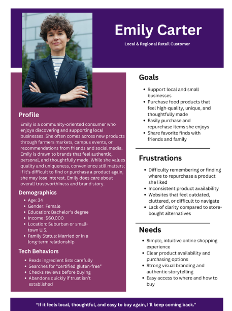
Emily Carter — Local Retail Customer
Already loves the product; needs an easy, warm online experience that matches the farmers-market feeling.
Key UX priorities
- Trust & transparency
- Clear product hierarchy
- Easy paths to purchase
- Cohesive cross-platform branding
- Scalability for subscriptions + wholesale
Competitive landscape
Purely Elizabeth · Michele's Granola · Rainbow Trout Granola
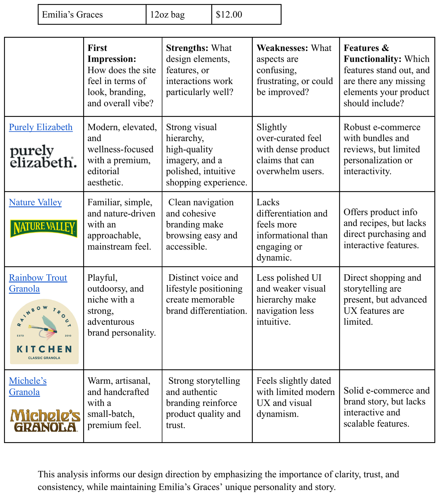
Who else lives on the shelf.
What we learned — Trust labels need to live above the fold. Navigation had to get simpler. Stronger product photography and shorter paths to purchase separated the brands that converted from the ones that didn't.
A system, not just a logo.
The product had warmth; the brand didn't show it. I built a complete identity system designed to feel handmade and human while staying consistent enough to scale across web, packaging, and social.
Logo system
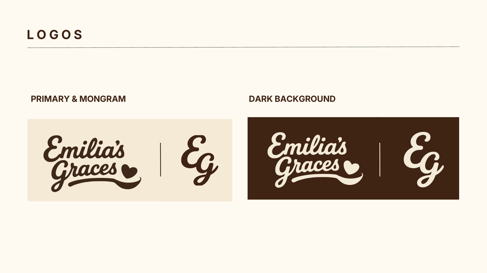
A Fraunces-italic wordmark anchored by a hand-drawn swash, a circular bowl-badge submark, and a heart-spoon app icon — one identity that flexes from a 16px favicon to a packaging front.
Typography
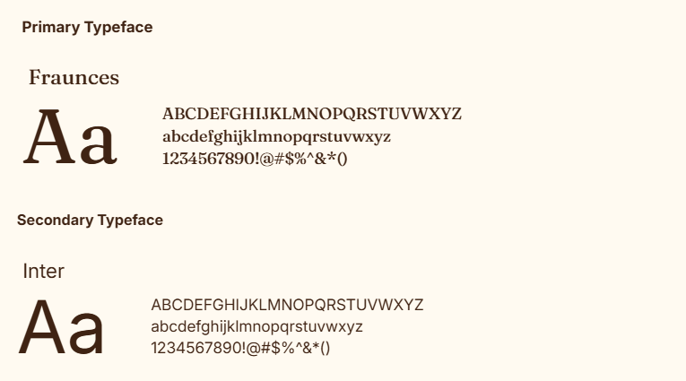
Fraunces (italic) carries the editorial warmth and handcrafted feel; Inter keeps body copy clean and readable across the store.
Color system
Cream
#f1e3c9
Espresso
#4e2b17
Terracotta
#bb6834
Olive
#565A2F
Magenta
#af3063
Each of the four core colors maps to two of the eight flavors — enough variety for shelf differentiation, tight enough to read as one family.
Ingredient iconography
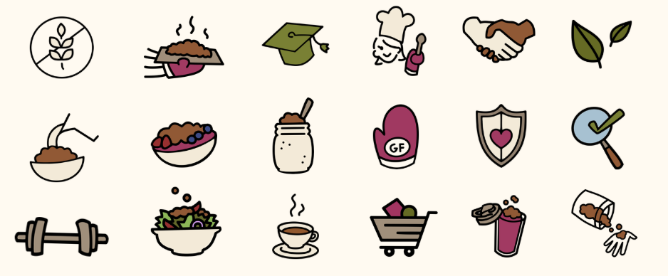
A custom line-art icon set — consistent stroke weight, warm and handmade rather than clinical — used for ingredients, trust signals, and packaging motifs.
Packaging direction
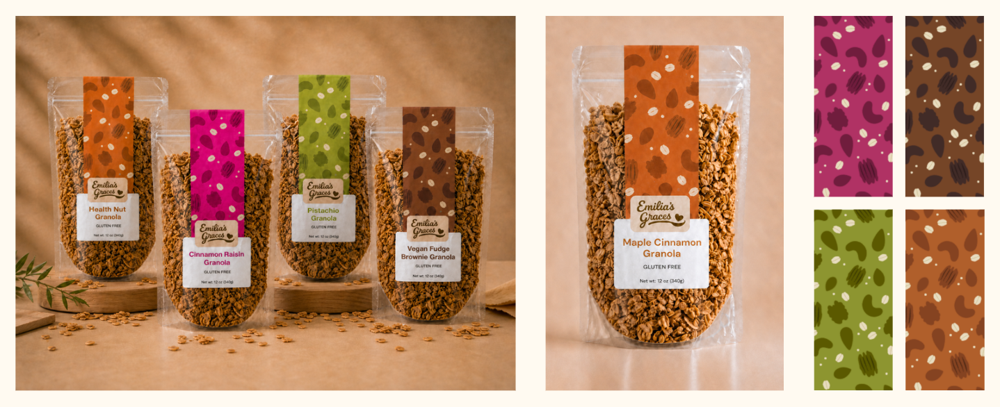
A consistent layout system where color and pattern do the differentiating work — eight flavors that clearly belong to one brand while each owning its own identity.
Designing the pattern by hand
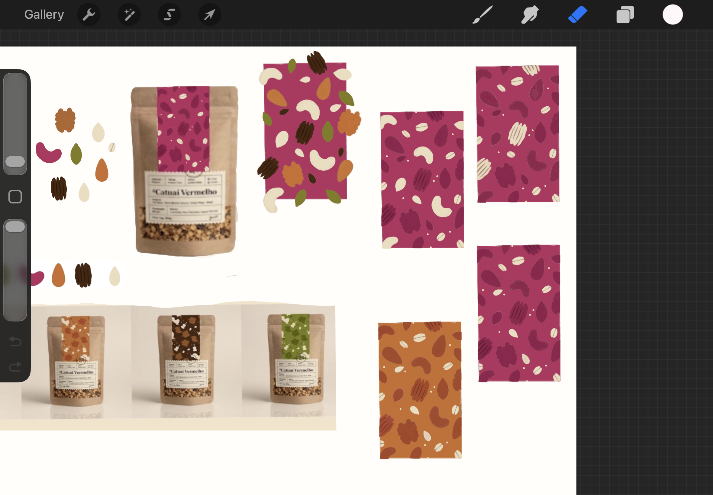
Each flavor's pattern was hand-illustrated in Procreate — drawing the ingredients rather than sourcing stock art kept the whole system warm and unmistakably handmade.
Designing a more scalable shopping experience.
We restructured the store around how three different audiences actually shop — making trust visible, products easy to discover, and future growth through subscriptions and wholesale possible from the start.
Information architecture
Homepage → Collections → Products → Subscriptions → Wholesale
Homepage
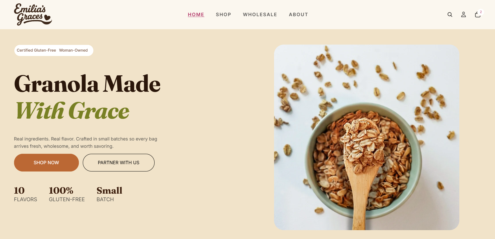
A product-first homepage with gluten-free trust signals above the fold, a clear CTA hierarchy, and simplified navigation.
Product discovery
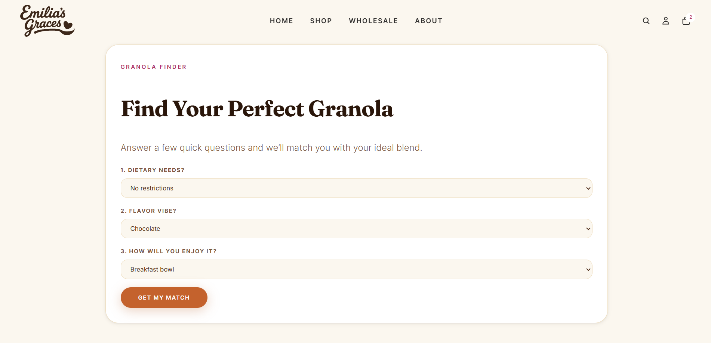
A clear collection structure, filtering, and a "Find Your Perfect Granola" quiz to guide first-time buyers.
Wholesale experience
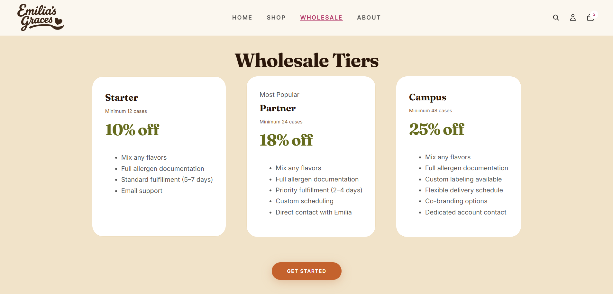
Defined wholesale tiers, institutional pathways, and a clear inquiry process.
Subscription UX (concept)
A concept flow for recurring delivery, pricing tiers, and friendly pause/cancel controls.
Designed in the room with the client.
As Client Liaison, I owned the relationship with the owner and presented our work in client-facing sprint pitches. The brand didn't emerge from a brief — it was shaped pitch by pitch, with her feedback steering every round.
Each sprint, we presented designs, captured the owner's reactions, and refined. My job was translating between her instincts about the brand and our design decisions — and making sure what we built still felt unmistakably hers.
How the design evolved
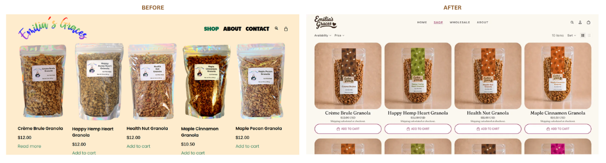
The shop, rebuilt — before and after.
Working with a real owner meant balancing creative vision against someone's actual livelihood — and learning to present design choices in language a non-designer could trust and feel ownership of.
A brand that's ready to scale.
No invented metrics — the win was a cohesive, defensible system the client could actually grow into.
- A cohesive, handmade-feeling brand identity
- A scalable Shopify direction with clearer hierarchy
- Stronger gluten-free trust communication
- Defined pathways for institutional buyers
- A polished system that holds together across web, packaging, and social
1st Place — JMU Interactive Design Capstone Showcase
2026
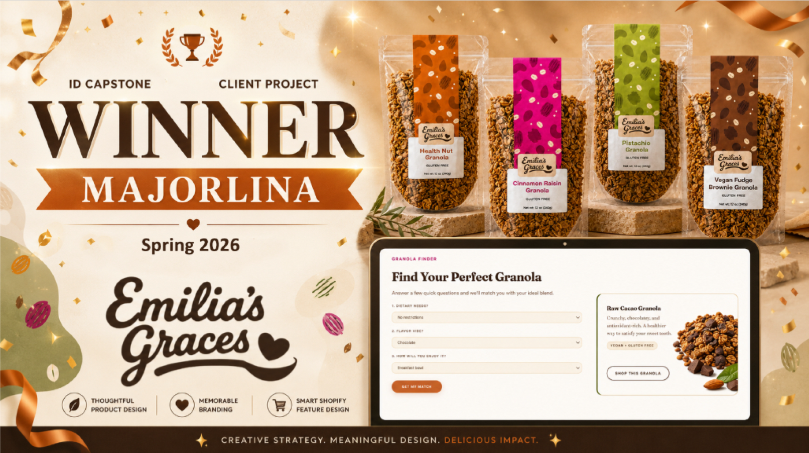
Announced as the winning capstone team.
What I took from it.
"This project sharpened how I see branding, UX, and ecommerce working as one system inside real business constraints. Designing for a growing food brand meant balancing emotional storytelling with scalable infrastructure — and as Client Liaison, learning to translate design decisions into language a non-designer owner could trust and take ownership of."